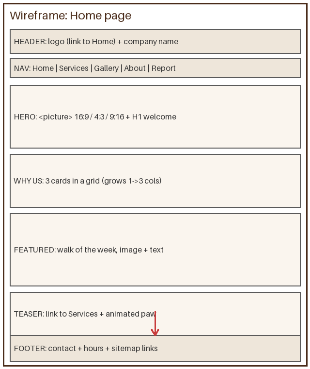
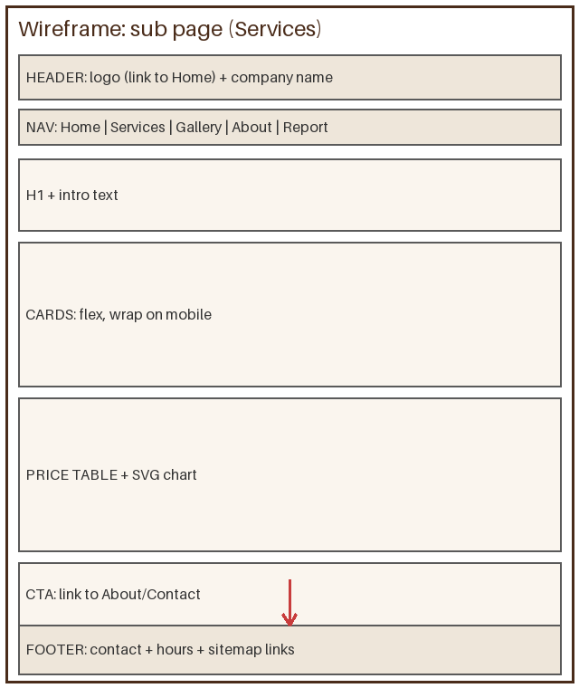
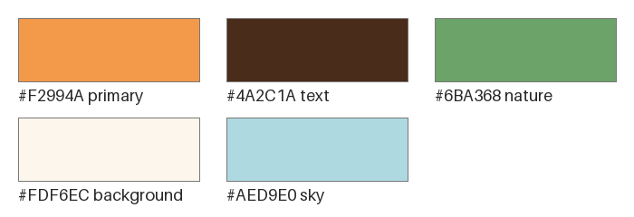
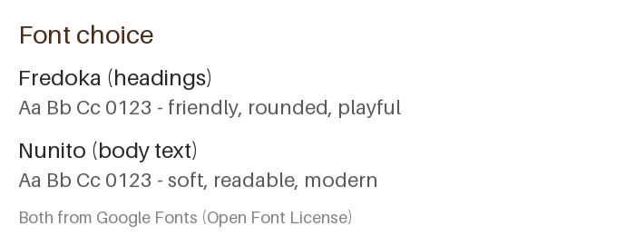

Web report
This page is the written report of the course project: the specification we agreed with the customer, the plan, the design choices, and finally our own reflections on how the work went.
1. The customer and the problem
Customer: Anna Lindqvist, who runs a one-woman dog walking service in Vaasa. So far her whole business lives on an Instagram account (@happypawsvaasa, about 210 followers) and word of mouth.
Problem: many dog owners in Vaasa work long or shifting days. The dog still needs its walks. Anna solves this, but she has no website, so she looks less serious than she is, and new customers have no way to check prices, services or where she operates.
Purpose of the site: a warm, trustworthy business card that presents the services and prices clearly, shows photos from real walks, and tells new customers how to get in touch. The site does not handle bookings or payments - that is out of scope for version 1.
2. Specification and scope
Title of the site: Happy Paws Vaasa.
Target audience: adults 25-60 in the Vaasa region who own a dog (or a puppy) and work away from home. Most of them will find the site on their phone, so the site must work well on small screens first.
Starting point: the customer already has Instagram and a logo idea (an orange paw). The site reuses the paw and the orange colour so that old Instagram followers recognise the brand.
In scope (agreed with the customer):
- 5 pages: Home, Services & prices, Gallery, About & contact, Web report
- real text in English, written together with the customer
- price table, walking hours, contact details and a map of the home base
- photo gallery with thumbnails and one short video
- works on phone, tablet and desktop
Out of scope (version 1): online booking, payment, customer login, blog, newsletter, other languages than English.
Working methods explained to the customer: we followed a lightweight waterfall: first the specification and wireframes on paper, then customer approval, then building, then validation and a walk-through together. We also explained why the customer cannot just edit the texts herself: the pages are static HTML files, so changing a sentence means editing the file and re-uploading it - there is no editing screen like in Instagram or WordPress. If Anna later wants to update prices often, the natural next step is either a small CMS or a maintenance agreement where we do the edits.
Responsiveness definition: the site is built mobile first and tuned for three breakpoints: phones (base styles, ~360-639 px), tablets (≥640 px, two columns) and desktops (≥1024 px, three columns and a horizontal menu). On 4K/8K screens the content is capped at a 1100 px centred column, because mile-long lines of text are hard to read; the page background still fills the screen. Older smartphones are supported since the site uses no JavaScript at all and the images are small. A smartwatch is explicitly out of scope: the audience books dog walks at home or on a break, not from a watch face, and a usable watch layout would need a separate design.
3. Site map
All five pages are reachable from the main menu on every page, and the logo always leads back to Home, so the whole site is at most one click deep. The gallery pictures live in their own small pages that open inside the gallery iframe.
4. Wireframes
Before building anything we sketched the layout with boxes on paper-style wireframes: one for the home page and one shared by the sub-pages. Header, menu and footer are identical on all pages so the site feels like one site.


5. Colours, fonts and images
We chose a warm, friendly palette that matches the orange paw logo: cream as a calm background, brown for text and footer, orange for actions and headings, green for nature accents and a light sky blue for boxes. The palette was tuned with colour tools and kept to five colours for harmony.

Fonts come from Google Fonts: Fredoka (rounded, playful) for headings and Nunito (soft, very readable) for body text. Rounded shapes and warm colours both support the same feeling: this is a friendly service, not a bank.

All photos and the logo are self-made: the logo is a transparent PNG paw drawn for this project, and the photos are our own illustrations, so there are no copyright problems anywhere on the site.
6. Structure, style and responsiveness
- Every page uses HTML5 semantic elements:
header,nav,main,section,article,figure,footerand exactly oneh1. - All styling lives in one shared CSS file (
css/style.css) with selectors, classes and pseudo-classes: links change colour on:hover,:active,:focusand:visited, and the current menu item is highlighted with the.currentclass. - Layout: the cards and footer use CSS grid, the menu and thumbnail strip use flexbox, and the portrait photo on the About page is placed with a float so the text wraps around it.
- Mobile first: base styles are for phones; media queries at 640 px and 1024 px re-arrange the layout for tablets and desktops (three breakpoints in total, counting the base).
- The menu is a CSS-only hamburger on small screens (a hidden checkbox and a label - no JavaScript), and a normal horizontal bar on desktops.
- Images used as links: the logo in the header always leads back to Home, and the paw button on the Home page opens Instagram in a new tab.
- Images are stored in the sizes they are shown in (thumbnails are real 160×120 files, not shrunken big photos), so pages load fast.
7. Media and animation
- Gallery with iframe: thumbnails open big versions of the
photos inside a named iframe (
target="viewer") - a classic no-JavaScript gallery. - Featured image with the picture element: the home page
hero uses
picturewith three different crops: a wide 16:9 image for desktops, a 4:3 crop for tablets and a portrait 9:16 crop for phones, because a wide landscape photo becomes a tiny stamp on a phone screen. - SVG drawings: the bar chart on the Services page and the site map above are inline SVG, so they scale sharply on every screen.
- Video: a 5-second 640×360 MP4 of a walk, filmed in landscape like an intellectual, with a poster image and a download link as fallback.
- Audio: a short greeting on the About page, served as MP3 with a WAV fallback.
- Map: the home base location is embedded from OpenStreetMap on the About page.
- CSS animations: the paw badge bounces, the hero heading
slides in, and the footer logo wags - all with
@keyframesusing several steps (0/25/50/75/100%), not just from/to.
8. Validation
All five pages were run through the W3C Markup Validator
(validator.w3.org) and the stylesheet through the W3C CSS Validator
(jigsaw.w3.org/css-validator). The pages pass with no errors; the only
validator notes are Google Fonts URLs, which are outside our control.
Validation caught real mistakes during the work: a missing
alt on one gallery thumbnail and a label without
a matching for attribute.
9. Reflections
Time used: about 32 hours in total: 6 h specification, wireframes and design, 14 h HTML/CSS, 6 h images, audio and video, 3 h validation and fixes, 3 h the report.
What was easy: writing the content - once the customer and her problem were clear, the texts almost wrote themselves. The price table and contact page were pure joy: semantic HTML fits them perfectly.
What was hard: the CSS-only hamburger menu. Without
JavaScript the checkbox hack was a real puzzle: the checkbox, the label and
the menu list must be siblings for :checked + ul to work.
Also getting the picture crops to actually look different (not
just differently squished) took several attempts.
What was fun: drawing the whole image material ourselves and the moment the iframe gallery worked with zero lines of JavaScript.
What we learned: that most of the work is planning, not typing; that mobile first actually makes CSS simpler; and that validators are friends, not police - they found bugs we stared straight through.
Feedback for the course: the project is a good size and the requirements push you to touch every corner of HTML and CSS. A wish for next year: one extra lecture example of the iframe gallery and the checkbox menu, since both are classics that everyone ends up googling anyway. Extra points are welcome for: the self-made image set, the SVG chart and site map, and the audio served in two formats.
10. Sources and licences
- All images, the logo, the video and the audio: self-produced for this project.
- Fonts Fredoka and Nunito: Google Fonts, Open Font License.
- Map data in the OpenStreetMap embed: © OpenStreetMap contributors, ODbL licence.
- No copyrighted third-party material is used on the site.